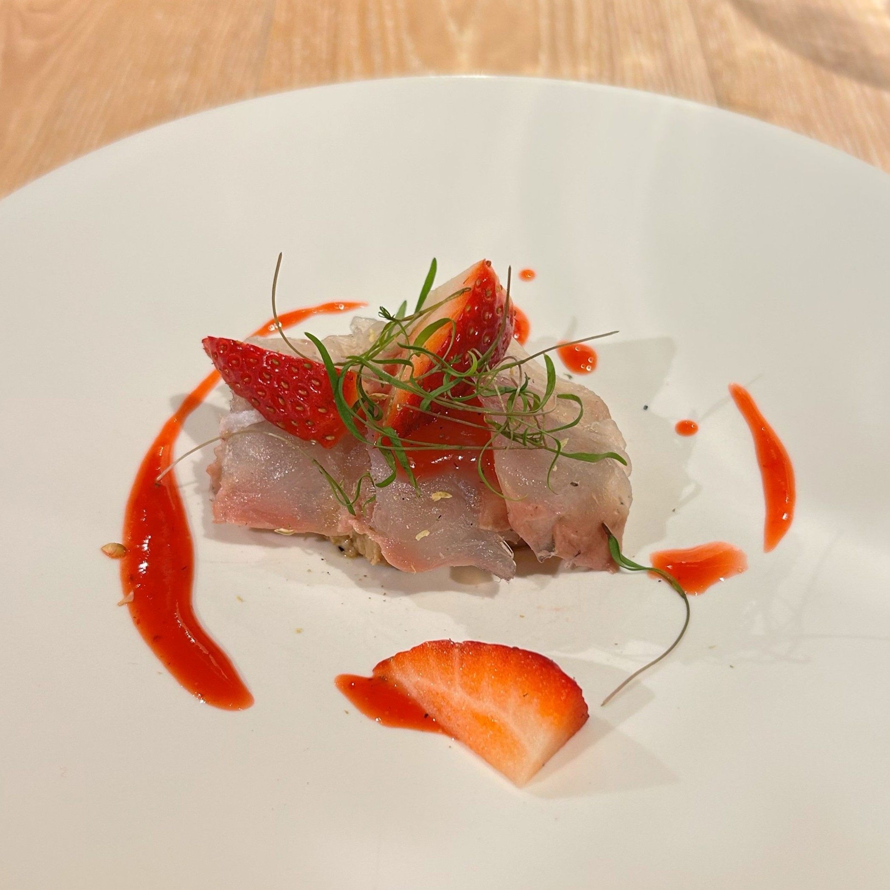
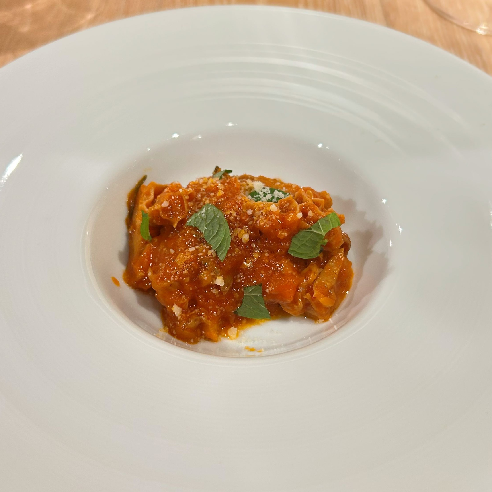
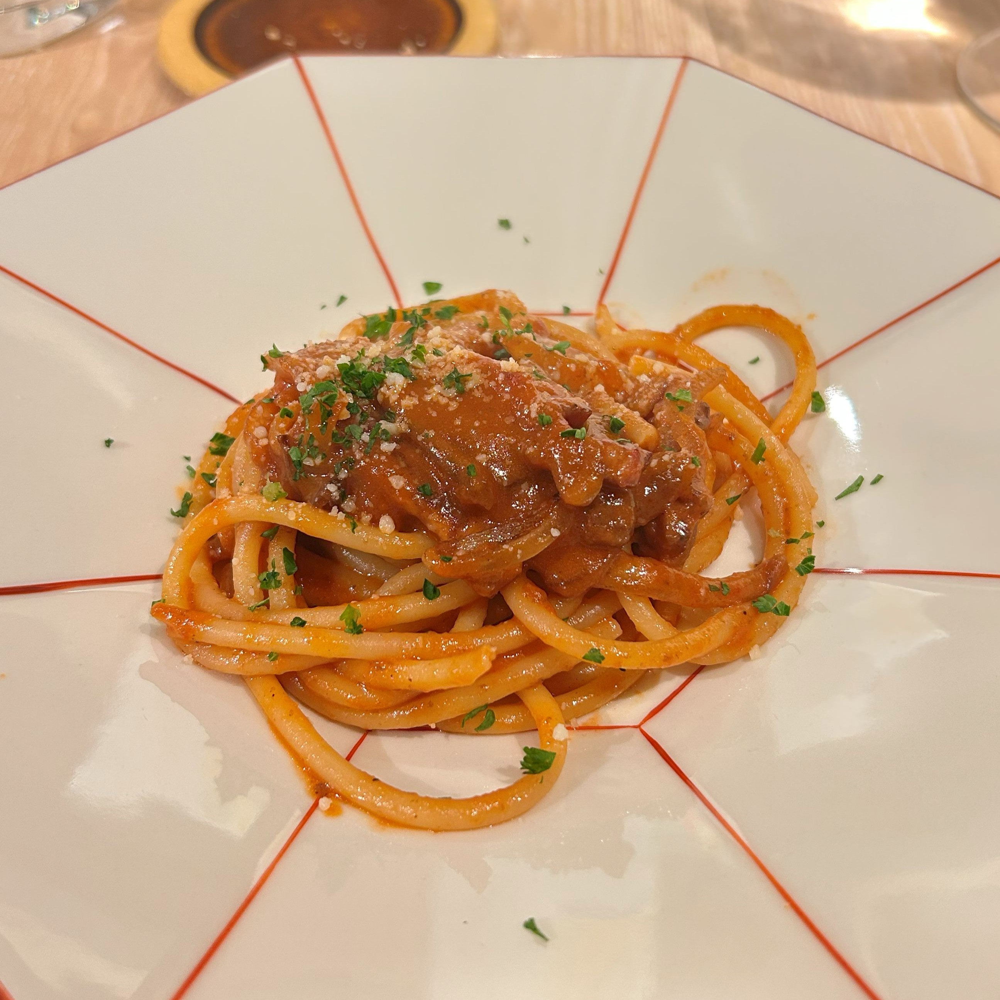

"大切な" "驚き" といった意味を込めた店名「Da Boo.」。
肩肘張らないイタリアンというコンセプトのもと、親しみやすいあたたかな接客にとても落ち着く空間が提供されます。
イタリアで修業したシェフが作る料理は、「もしイタリア人が北海道に来たらこんなイタリアンを出す」をテーマに、道産食材を用いた季節を感じられる美しい芸術品です。
料理もさることながらイタリア産にこだわったワインが豊富に取り揃えており、料理に合わせたペアリングや産地・生産法などの細かい説明には圧巻されることでしょう。


